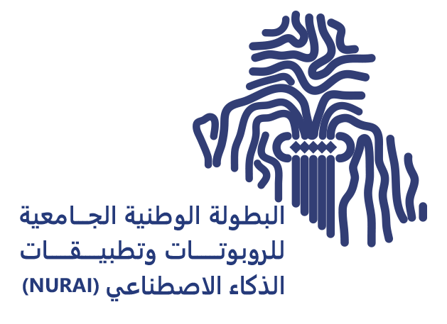
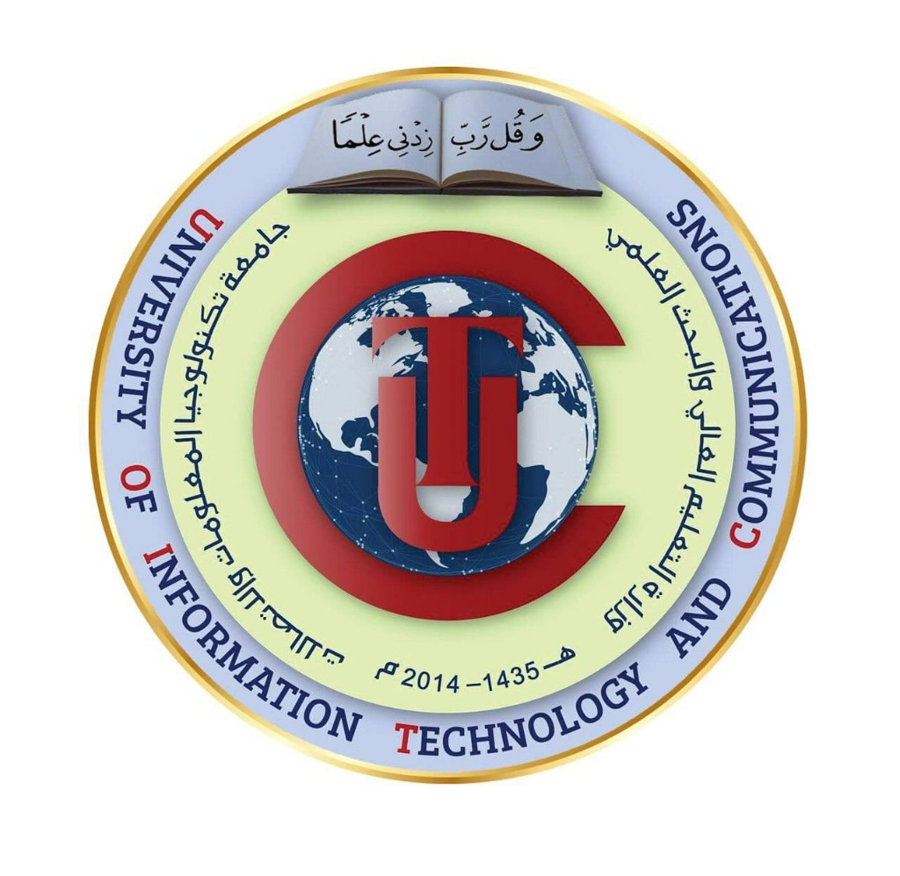

البطولة الوطنية · NURAI
جامعة UOITCمنصة MLOps + GIS + Fleet — تحوّل كل مركبة إلى مستشعر ذكي للبنية التحتية للطرق
« نرصد الطريق… قبل أن تصبح المشكلة حادثاً »
البلاغ اليدوي بطيء — راصد يحوّل كل سيارة إلى مستشعر ذكي على الطريق
AI صناعي + GIS لحظي + Fleet Edge — منصة واحدة للتشغيل والإنتاج
YOLO26s · ByteTrack · Active Learning · Optuna HPO · 5+ معماريات · تدريب تزايدي على نفس الملف
PostGIS · WebSocket Map · 6 أنواع أحداث · حد سرعة ذكي · Redis Cache · تنبيه جغرافي 15 كم
Electron Driver · Flutter Offline · GPS Native · كاميرا 1280×720 · Telemetry · Docker Production
ليس Demo منفصل — كل طبقة متصلة عبر API وWebSocket
كل كشف مرتبط بـ GPS · صورة · ثقة · timestamp
بلاغات بلدية · مخالفات مرور · طوارئ متعددة القنوات
من Edge Device إلى MLOps Console — كل منتج يخدم دوراً في المنظومة
لوحة MLOps · خريطة GIS · Fleet · Reports
Electron · كشف لحظي · Telemetry
Annotation · Training · Registry
Flutter · Offline · CarPlay Map
ثلاث قصص حقيقية — كل سيناريo يشرح مشكلة → كشف → قرار → إجراء → نتيجة في أقل من 15 ثانية
المشكلة: تجاوز صامت · الحل: قرار AI فوري + إثبات قانوني
المشكلة: حفرة خفية · الحل: دمج رؤية + حسّاس → بلاغ بلدية
المشكلة: حادث حرج · الحل: استجابة متعددة الجهات في ثوانٍ
112 كم/س · الحد 80 · +32
traffic_violation
33.315°N · 44.366°E
تم إصدار الإشعار رسمياً
مخالفة سرعة موثّقة
112 كم/س · الحد 80
استلام سجل قانوني كامل
GPS · الدليل · المركبة
Rasid Drive · 72 كم/س · كل 12 ثانية — لا حاجة لرادار ثابت
Google Roads → OSM → Redis · الحد في هذا المقطع: 80
112 > 80 · +32 كم/س · المقارنة البصرية تثبت الفرق
اهتزاز + إشعار على الشاشة — قبل أي إجراء رسمي
سجل تدقيق: GPS · وقت · سرعة · لا تدخل بشري
PostGIS + 200,000 IQD → السائق + مديرية المرور
الصورة وحدها قد تخطئ (42%) — الاهتزاز يثبت أن السائق مرّ فعلاً على ضرر حقيقي
لا توجد قراءة غير طبيعية
الحفرة أُزيلت من الخريطة الحية
YOLO26s · 42% — دقة لا تقل عن 35% · لسنا متأكدين بعد
صدمة +2.7g + صورة → ثقة 87% — قرار مُؤكَّد
PostGIS · تحذير على بعد 180م → 80م · مسار آمن
أمانة بغداد · #BLD-2026-0847 · أولوية عالية
إرسال تلقائي · منطقة عمل · إصلاح فوري
الحفرة أُزيلت من الخريطة الحية — الطريق آمن مجدداً
تقاطع الرشيد · 33.315°N · 44.366°E
مركبتان متضررتان · يحتاج إخلاء فوري
8.2 كم · تم التحذير
11.5 كم · تم التحذير
14.1 كم · تم التحذير
YOLO26s ≥60% · ByteTrack · 12 fps — في أقل من 3 ثوانٍ
PostGIS · 33.315°N · 44.366°E — إحداثيات موثّقة
مسارات + ETA · إسعاف في الطريق
911 · 122 · 115 · 104 — Push · Email · Radio
المرور + الإسعاف + الشرطة — استجابة منسّقة
كل مركبة Rasid في النطاق · تجنّب المنطقة
كشف متعدد الفئات · 12 إطار/ث · Edge · تتبع مستمر
دقة لا تقل عن 35% · حساسية متوازنة
دقة لا تقل عن 60% · لا نفوّت حادثاً
تتبع مستمر · ID ثابت عبر الإطارات
GPS + حد سرعة · 200,000 IQD
6 مراحل متصلة — من جمع البيانات إلى Active Learning وإعادة التدريب
فيديو · صور · Fleet · Active Learning · Import · Annotation
وسم تفاعلي · Bounding Box · تصدير YOLO format
YOLOv10 · RT-DETR · EfficientDet · مقارنة نماذج
Model Registry · A/B · Celery Workers · GPU
POST /driver/detect · PostGIS Events · WebSocket
كشوفات منخفضة الثقة → Queue → إعادة تدريب
Edge → Gateway → Services → Data → Live GIS
Electron · Flutter · Edge
React · GIS · Fleet
Konva · Training
:8080 · JWT · Device Key
REST · WebSocket
GPU Workers
Inference · Edge AI
Multi-Object Track
Queue ≥ 0.70
Spatial Events · 6 Types
Cache 180s
S3 Evidence
Grafana Monitor
WebSocket · 15 km Alerts
Drive → Gateway → FastAPI → PostGIS → Live Map
كل سيارة = عين ذكية على الطريق — ترسل كشوفات لحظية للمنصة
Windows Native API → Browser Fallback · دقة عالية للربط المكاني · X-Device-Key
Google Roads API → OSM Overpass → osm_inferred → Redis Cache 180s
إرسال كشوفات مع GPS · صورة · ثقة · class
مصادقة الجهاز · Fleet ID · Telemetry
Flutter Offline · مزامنة عند عودة الشبكة
كل كشف AI يُحفظ كـ RoadEventType مع GPS · ثقة · timestamp · WebSocket broadcast
دقة لا تقل عن 60% · ByteTrack · طوارئ فورية
دمج AI + حساس اهتزاز · بلاغ بلدية
كشف YOLO · إرسال للبلدية · محلة 712
بالوعات مفتوحة · صيانة شوارع · GIS
GPS + حد سرعة · 200,000 IQD
صورة + GPS · المواطن يملأ البلاغ · يصل للمنصة فوراً
حلقة MLOps مغلقة — كل مصدر يغذّي التدريب والكشف والتحسين المستمر
1280×720 · 12 إطار/ث · Rasid Drive
→ TrainingImport · Annotation · YOLO format
→ DatasetBounding Box · وسوم تفاعلية
→ Labelsكشوفات ≥0.70 · Queue تلقائي
→ Retrain6 أنواع · GPS موثّق · Spatial
→ GIS Mapاهتزاز · GPS · Telemetry
→ ConfirmOptuna HPO · 5+ معماريات · Model Registry · A/B Deploy
Stack متكامل — من Frontend إلى DevOps · جاهز للإنتاج
أمان Enterprise: JWT Auth · Device Keys · Gateway :8080 · Prometheus Monitoring · Docker Production
ليس نموذج AI منفصل — منصة تشغيل متكاملة end-to-end
من ساعات البلاغ اليدوي → 12 إطار/ث معالجة AI على Edge
Active Learning ≥0.70 — النموذج يتحسن مع كل رحلة
Docker · VPS · Prometheus · Grafana · Enterprise MLOps
بلدية · مرور · طوارئ — بلاغات وإشعارات تلقائية
WebSocket Map · تحذير السائقين قبل الوصول للمنطقة
RoadEventType — حفر · مطبات · بالوعات · حوادث · سرعة · تبليغ مواطن
نرصد الطريق… قبل أن تصبح المشكلة حادثاً
3 سيناريوهات حية — تجاوز سرعة · حفرة · حادث · كلها مع PostGIS وإشعارات حقيقية
4 منتجات — Console · Drive · ML Studio · Rasid Auto · منصة واحدة
YOLO26s · 12 إطار/ث · دقة ≥60% حوادث · ≥35% حفر